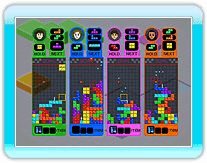
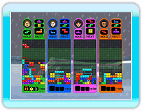
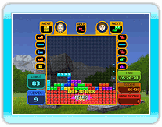

Played with standard Tetris
battle rules. Face off against
rival players and/or computer
opponents as you clear lines while trying to force your
opponents into a game over situation. Last player remaining is declared the winner. The number of lines you clear determines the number of lines sent into your opponents' Matrices.
The standard rules are the same as those for "Field Climber". You win by either reaching the goal first or when your opponent can no longer continue the race.
Each time a player passes through a checkpoint, a "Line Kick" is awarded to that player.

Clear the lines designated in green. If you clear a line over one of the designated green lines, the green line behind it will be cleared. You win by either being the first to clear all lines or when your opponents can no longer continue playing. If you're playing as a team, when your teammate clears a line, the line in the same location of your Matrix will be cleared.

The standard rules are the
same as those for "Shadow". The winner is the player with the highest completion
level at the end of the game, or if a player achieves a 100% completion level during the game, that player will be immediately declared the winner.

The standard rules are the
same as those for "Stage
Racer". You win by either
being the first to reach the
goal or when your opponents
can nolongercontinueplaying.
nolongercontinueplaying.

A two-player game in which the participants cooperate to clear lines on a field that is double the width (20
blocks wide) of a normal field. The Tetriminos that enter the Matrix vary for P1 and P2. However, the standard rules of Tetris apply. "Hold" is shared between P1 and P2.

A two-player game in which the participants cooperate to clear lines on a Matrix
that is double the width (20 blocks wide) of a normal
Matrix. The rules significantly differ from those of standard Tetris in that the players compete to see who can enclose the most space with their Tetriminos (the Tetriminos themselves count as space). The players take turns controlling a Tetrimino. The player whose Tetrimino closes off an area is awarded the space. At the end of the game, the player with the largest total area is declared the winner.